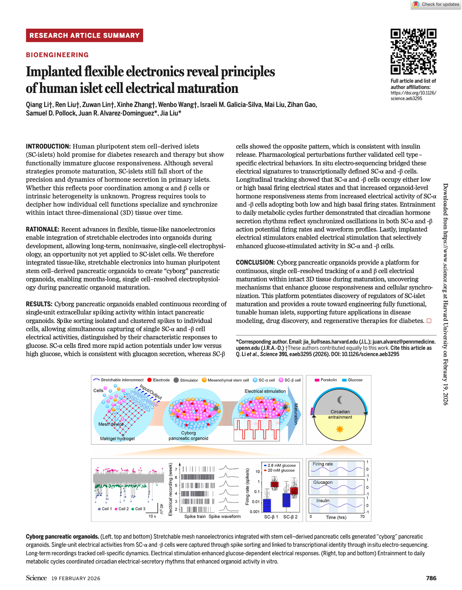

%20logo_White.png)
Organoid Intelligence
Engineering human stem cell-derived organoids with integrated bioelectronic systems to study tissue development and functional maturation.
We integrate human stem cell-derived organoids, flexible nanoelectronics, multimodal electrophysiology, spatial transcriptomics, and artificial intelligence to understand human tissue development, uncover disease mechanisms, and advance therapeutic discovery.

Our research integrates organoid engineering, bioelectronics, and disease modeling to develop intelligent human organoid systems that advance our understanding of human diseases, uncover disease mechanisms, and accelerate the development of new therapeutic strategies.
Engineering human stem cell-derived organoids with integrated bioelectronic systems to study tissue development and functional maturation.
Combining flexible nanoelectronics, electrophysiology, and spatial molecular profiling to connect gene expression with cellular function.
Developing human organoid models to investigate disease mechanisms, including Parkinson's disease and other human disorders.
Integrating human organoid models, animal studies, and computational approaches to advance therapeutic discovery and translational medicine.
Selected publications highlighting our advances in organoid bioelectronics, electrophysiology, and translational research.

Science · 2026
Li, Q.#, Liu, R.#, Lin, Z.#, et al. Science 391, eaeb3295 (2026).

Nature · 2025
Sheng, H.#, Liu, R.#, Li, Q.#, et al. Nature 642, 954–964 (2025).

Cell · 2023
Li, Q.#, Lin, Z.#, Liu, R.#, et al. Cell 186(9), 2002–2017 (2023).

Advanced Materials · 2022
Le Floch, P.#, Li, Q.#, Lin, Z.#, et al. Advanced Materials 34, 2106829 (2022).
Our interdisciplinary team brings together expertise in stem cell biology, bioelectronics, electrophysiology, molecular profiling, and computational science.
We welcome motivated researchers and trainees interested in organoid engineering, bioelectronics, human disease modeling, and translational medicine.
Explore opportunities →